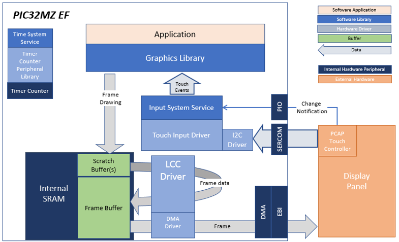
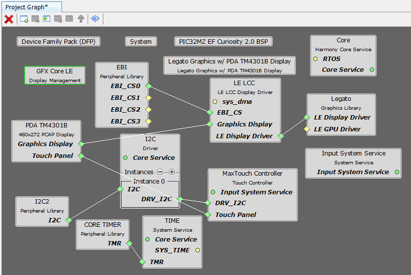

|
MPLAB® Harmony Graphics Suite
|
|
MPLAB® Harmony Graphics Suite
|

The architecture for this configuration is composed of the PIC32MZ EF and the WQVGA display with LCC interface.
A 16-bit RGB565 frame buffer is stored in the internal SRAM, and the Low Cost Controller-less (LCC) display driver is used to manage the DMA that transfers the framebuffer contents to the display via the EBI peripheral.
User touch input on the display panel is received thru the PCAP capacitive touch controller, which sends a notification to the Touch Input Driver. The Touch Input Driver reads the touch information over I2C and sends the touch event to the Graphics Library thru the Input System Service.

The Project Graph diagram shows the Harmony components that are included in this application. Lines between components are drawn to satisfy components that depend on a capability that another component provides.
Adding the PIC32MZ EF Curiosity 2.0 BSP and Legato Graphics w/ PDA TM4301B Display Graphics Template component into the project graph will automatically add the components needed for a graphics project and resolve their dependencies. It will also configure the pins needed to drive the external peripherals like the display and the touch controller.
The parent directory for this application is gfx/apps/legato_adventure. To build this application, use MPLAB X IDE to open the gfx/apps/legato_adventure/firmware/legato_adv_mzef_cu_tm4301b.X project file.
The following table lists configuration properties:
| Project Name | BSP Used | Graphics Template Used | Description |
|---|---|---|---|
| legato_adv_mzef_cu_tm4301b.X | PIC32MZ EF Curiosity 2.0 | Legato Graphics w/ PDA TM4301B Display | PIC32MZ EF Curiosity 2.0 with RGB565 GFX Interface and 4.3" WQVGA PCAP Touch display |
**_NOTE:_** This application may contain custom code that is marked by the comments // START OF CUSTOM CODE ... and // END OF CUSTOM CODE. When using the MPLAB Harmony Configurator to regenerate the application code, use the "ALL" merging strategy and do not remove or replace the custom code.
The final setup should be:
Configure the hardware as follows:
The final hardware setup should be:

The application first boots to an animated Splash Screen. Once the Splash Screen animation completes, the application boots to a Main Screen.
When at rest, the demo will cycle through idle sprite animations. Various areas of the screen are touch interactive

If initiated to run, the lamb sprite will run to the end of the screen, and play out a sequence of smacking into a wall, hurt and dizzy animations.

Tap Jump and the lamb will play out a jump animation.

Info Screen describes the features supported by this demo

 1.8.18
1.8.18